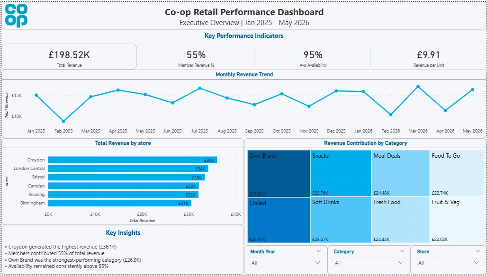
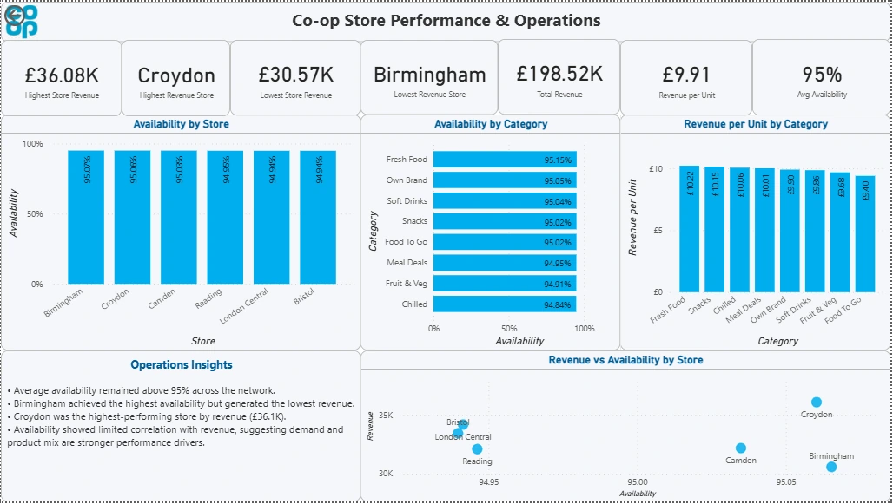
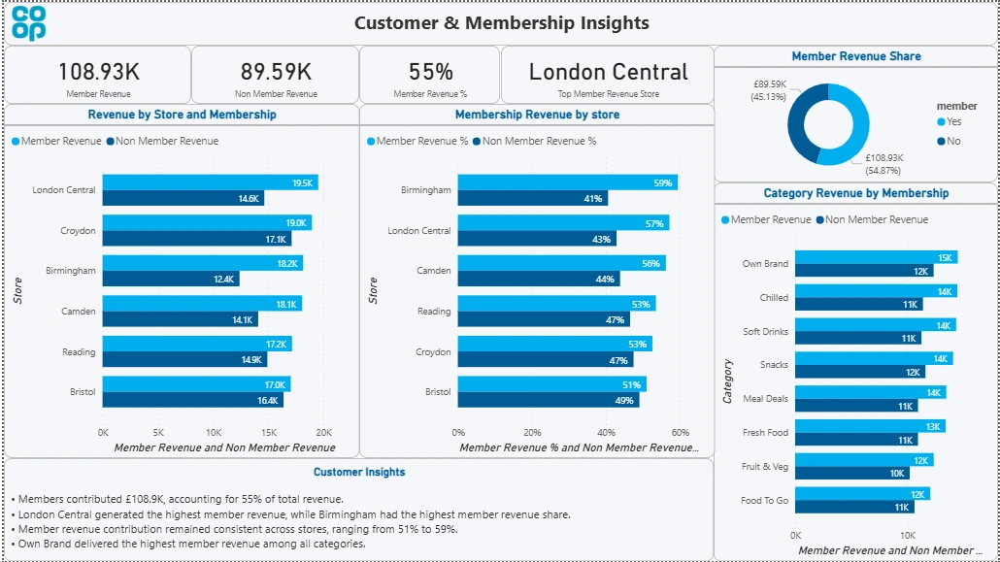

Business problem & questions
A sales total does not tell an operational manager where to act. This portfolio analysis brings store, category, member and availability measures together so performance differences can be investigated in context.
- Which stores and categories contribute most revenue?
- How much revenue comes from members, and what does that comparison actually tell us?
- Are store revenue differences explained by availability alone?
- Which additional measures would be needed before recommending a commercial intervention?
Data, scope & my contribution
The public repository contains a retail CSV, Python cleaning and exploration scripts, summary exports and a three-page Power BI report. This case study presents the preparation, comparisons and report documented in those files. Individual versus team ownership is not recorded in the repository.
| Measure | Checked-in data |
|---|---|
| Raw / cleaned rows | 5,000 / 4,981 |
| Coverage | 6 stores · 8 categories · January 2025–May 2026 |
| Recorded revenue / units | £198,517.44 / 20,029 |
| Distinct customer IDs | 3,170 |
| Average availability | 95.00% (rounded) |
Approach & why it fits
- 01Retail CSV
- 02Python preparation
- 03Store / category / member comparisons
- 04Power BI views
- 05Proposed priorities for investigation
Why Python? Repeatable cleaning and grouped summaries make it easier to inspect how a result was produced. Why Power BI? Linked views and slicers let a reader move from the total to a store or category without building a new spreadsheet for every question. Excel remains useful for quick checks; the report provides a consistent exploration layer.
Ranked bars make store contributions easy to compare. A time-series line shows the monthly pattern, and member comparisons keep customer behaviour visible alongside operational KPIs.
Data preparation & metric decisions
- Standardise column names, trim text, parse dates and convert numeric fields.
- Remove duplicate rows, negative revenue, non-positive units and availability outside 0–100%. The checked-in cleaned file has 19 fewer rows; this audit did not rerun the hard-coded local-path script.
- Create month, year and weekday fields; group revenue and availability by store, category and member status.
- Check totals against the exported summaries and dashboard before drawing conclusions.
A second distinction matters: the mean of row-level revenue/unit ratios differs from total revenue divided by total units. Neither should be substituted for the other without explaining its weighting.
Key findings & proposed actions
| Finding | Interpretation | Proposed action |
|---|---|---|
| Croydon: £36,076.77; Birmingham: £30,572.29 | The highest-revenue store is about 18% above the lowest in this sample. Store size, footfall and hours are not controlled. | Investigate comparable-store volume and range before treating the gap as underperformance. |
| Members: £108,930.37, or 54.9% of revenue | A larger share of observed revenue comes from members; it does not show that joining caused higher spending. | Compare customer frequency and mix with suitable transaction history before designing a membership campaign. |
| Store availability averages: 94.94%–95.07% | Similar aggregate availability coexists with different revenue totals. Availability alone is not a sufficient explanation. | Review category mix, units sold and finer-grained stock-outs; do not infer a causal relationship. |
| Own Brand: £26,900.81 | The largest category by recorded revenue, not necessarily by margin. | Add margin and waste before making range or promotion decisions. |
The Power BI report: question by question



Challenges & limitations
- Dataset provenance remains unconfirmed; findings demonstrate a method and are not evidence of actual Co-op performance.
- No reliable basket identifier, footfall, margin, promotions or comparable-store controls are available in the showcased data.
- Average availability can conceal specific stock-outs; customer IDs appear across groups, so segment-level distinct counts should not be added.
- Date parsing coerces invalid dates but the code does not explicitly drop all invalid dates; make this a formal validation rule.
- No intervention was evaluated. Correlation, membership share and store rankings do not establish causal impact.
What I would improve next
- Confirm source provenance and define the grain and KPI dictionary before extending the dashboard.
- Add transaction IDs, margin, waste and footfall; calculate basket value with the correct denominator.
- Introduce temporal forecasting with a backtest, and compare store clusters on a like-for-like basis.
- Evaluate promotions and basket associations only when appropriate product and transaction detail is available.
What this demonstrates
Business-focused Power BI reporting, repeatable Python preparation and the judgement to challenge a KPI definition before recommending action. For a BI manager, the important evidence is how a headline number connects to an interpretable measure and an operational question.